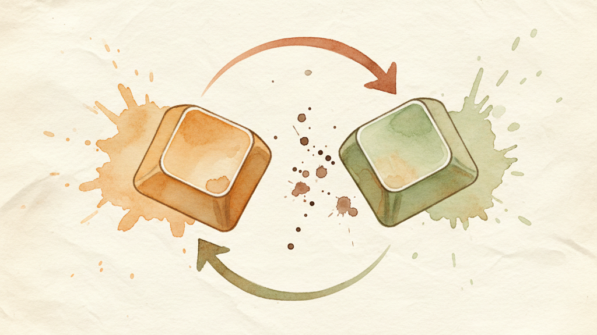

Remapping means making a key do something different than what's printed on it. A key you never use becomes one you press constantly. An awkward reach becomes a comfortable press.
This is the most useful thing KeyPath does. If you've never remapped a key before, this guide will get you there in under a minute — and by the end, you'll see why people redesign their whole keyboard.
You navigate text every day — moving the cursor through documents, emails, code, spreadsheets. Every time you reach for the arrow keys, your right hand leaves the home row:
your hand has to
travel here ──┐
↓
┌───┬───┬───┬───┬───┬───┬───┬───┬───┬───┐ ┌───┐
│ │ │ │ │ │ │ │ │ │ │ │ ↑ │
├───┼───┼───┼───┼───┼───┼───┼───┼───┼───┤ ┌───┼───┼───┐
│ │ │ │ F │ │ │ J │ │ │ │ │ ← │ ↓ │ → │
└───┴───┴───┴───┴───┴───┴───┴───┴───┴───┘ └───┴───┴───┘
↑ ↑
your left hand your right hand
stays here has to leaveOn a MacBook, those arrow keys are tiny. You look down to find them. You lose your place in the text. Then you move your hand back to the home row and find your position again. Dozens of times a day.
What if your right hand could stay on the home row and still have arrow keys?
Home Row Arrows turns F into a trigger. Tap F normally and it types "f". But hold F, and your right hand becomes arrow keys:
Hold F, then press:
┌───┬───┬───┬───┐
│ │ ↑ │ │ │ I = Up
├───┼───┼───┼───┤
│ ← │ ↓ │ → │ │ J = Left, K = Down, L = Right
└───┴───┴───┴───┘
Plus: H = Home, ; = End, U = Page Up, O = Page DownThe arrow layout matches the physical arrow keys you already know — up is above down, left and right are on either side. No new layout to memorize.
KeyPath installs Home Row Arrows by default. If it's already running, try it:
That's it. Your hand never left the home row. No reaching, no looking down, no tiny arrow keys.
If you're a developer who already knows Vim's HJKL navigation, you can switch layouts in the pack settings:
Inverted-T (default): Vim-Style:
┌───┬───┬───┬───┐ ┌───┬───┬───┬───┐
│ │ ↑ │ │ │ │ ← │ ↓ │ ↑ │ → │
├───┼───┼───┼───┤ ├───┼───┼───┼───┤
│ ← │ ↓ │ → │ │ │ H │ J │ K │ L │
└───┴───┴───┴───┘ └───┴───┴───┴───┘Or from the command line:
keypath pack install home-row-arrowsWhen you held F and pressed J, KeyPath told the Kanata remapping engine to intercept the keypress and send Left Arrow instead. This happens at a level below your apps — every application on your Mac sees an arrow key, not the letter J.
You press: KeyPath intercepts: Your Mac sees:
┌───┐ + ┌───┐ ┌───────────────┐ ┌───┐
│ F │ │ J │ → │ Kanata │ → │ ← │
│ │ │ │ │ engine │ │ │
└───┘ └───┘ └───────────────┘ └───┘
(hold) (press)When you release F, everything goes back to normal. F types "f" when tapped. J types "j" when tapped. The magic only happens when F is held.
Kanata is the open-source keyboard remapping engine that powers KeyPath. It runs as a system service, so your remaps work in every app, every context — even before you log in. KeyPath provides the visual interface; Kanata provides the engine.
Home Row Arrows uses a powerful technique (tap-hold + a layer), but remapping can also be much simpler. You can make one key behave as another key — no holding required.
The most popular simple remap. Caps Lock sits in prime real estate next to the home row, but it's useless for most people. Escape is far away but you press it constantly — dismissing dialogs, canceling searches, exiting full-screen.
Done. Caps Lock now sends Escape every time you press it.
Macs don't have a Forward Delete key (delete the character after the cursor). Right Option is right there and almost nobody uses it deliberately. Remap it:
keypath remap right_option delete| Remap | Why |
|---|---|
| Caps Lock → Escape | Move Escape to the home row |
| Right Option → Forward Delete | Add the missing Forward Delete key |
| Right Control → Enter | Bring Enter closer to the home row |
| Right Command → Hyper | A modifier no app uses — free shortcut real estate |
The keyboard overlay shows you what every key does right now. Remapped keys are highlighted so you can always tell what's been changed.
Click any key to see its current mapping. If you ever forget what you've changed, the overlay is your map.
Changed your mind? Nothing is permanent:
keypath unmap caps_lockExperiment freely.
You've seen two kinds of remapping — a simple key swap (Caps Lock → Escape) and a hold-activated layer (Home Row Arrows). That second one is the gateway to much more.
Tap-Hold — The technique Home Row Arrows uses. One key, two jobs: tap for one thing, hold for another. This is the second fundamental concept, and it unlocks everything else.
Layers — Home Row Arrows gave you one extra layer (arrows). Imagine having several — a numpad layer, a symbol layer, an app launcher layer. That's where the real power lives.
Browse the Pack Gallery — Pre-built feature packs you install with one click. Start with what's already on and explore from there.
| Pack | What it does |
|---|---|
| Home Row Arrows | Hold F for arrow keys on IJKL. Installed by default. |
| Caps Lock Remap | Tap: Escape (or Backspace/Hyper). Hold: modifier. |
| Escape Remap | Move Escape to Caps Lock, Backtick, or Tab. |
| Delete Enhancement | Forward-delete, word-delete, and line-delete from Backspace. |
| Backup Caps Lock | Both Shift keys together → Caps Lock. |
keypath remap <from> <to> # Remap a key
keypath unmap <from> # Remove a remap
keypath pack install <name> # Install a feature pack
keypath pack uninstall <name> # Remove a feature pack
keypath rule list # See all active rules| Key | Name in KeyPath |
|---|---|
| Caps Lock | caps_lock |
| Escape | esc |
| Delete/Backspace | backspace |
| Forward Delete | delete |
| Right Option | right_option |
| Right Control | right_control |
| Right Command | right_command |
| Backtick | grave_accent |
If KeyPath says your configuration was preserved, it could not safely reproduce your current configuration from the rules in the visual editor. The attempted app-specific edit has not been saved. Your configuration files remain unchanged.
This can happen with hand-written configurations, manual changes to generated files, or stored rules that differ from the generated configuration. App-specific editing requires an explicit conversion with a backup first. KeyPath does not perform that conversion automatically. Keep using your existing configuration; this editing limit does not stop it from running.